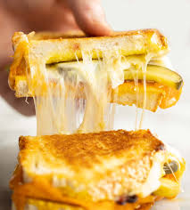

This pickle grilled cheese is filled with havarti and chopped dill pickles and pan-toasted to golden perfection. I highly recommend serving this with dill pickle kettle chips for the maximum pickle experience!
Place bread on a work surface and spread mayo evenly on one side of each bread slice
Toss cheese and pickles together in a bowl until evenly combined. divide cheese mixture evenly among 4 bread slices. Place remaining 4 bread slices, mayo side down, on top of cheese and pickle mixture.
Spread the tops of sandwiches evenly with half of so�ened butter. Heat a large skillet over medium heat.
Place sandwiches, buttered side down, in skillet. Spread remaining butter evenly over tops of sandwiches. Cook until golden brown and toasted on bottom side, about 4 minutes. Flip and cook until cheese is melted through and bread is toasted on both sides, about 4 minutes more. Serve immediately.